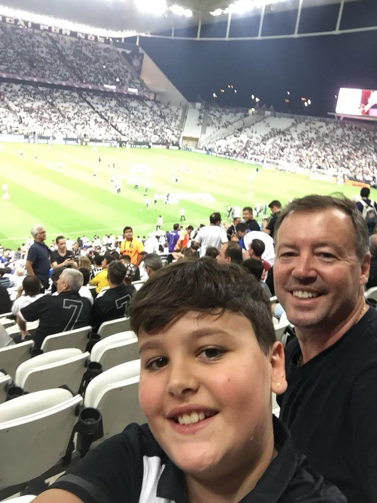

Minha História
Eu sempre fui um menino ligado a esportes em geral, mas sempre o que foi o meu maior amor foi o
futebol, desde pequeno quase todos os meninos que nascem no Brasil o sonho sempre foi ser jogador de
futebol, apesar de todas as dificuldades, eu nunca desisti, lutei e briguei por esse sonho por anos,
porém vi que não era aquilo que eu nasci para fazer, porém smpre foi muito amor envolvido, e com
isso começei a pegar gosto sobre o futebol, e então decido torcer para o time o do meu pai, o tão
glorioso CORINTHIANS, e sempre fui corinthiano e desde o dia que eu
lembro de eu ir ver a final do campeonato brasileiro na antiga Arena Corinthians, eu me arrepio, até
porque foi a primeira vez que eu fui acompanhado do meu pai ver um jogo do corinthians por um
título, e o nome desse blog veio por isso porque o CORINTHIANS é minha
vida, o CORINTHIANS é minha história e o CORINTHIANS é meu amor.